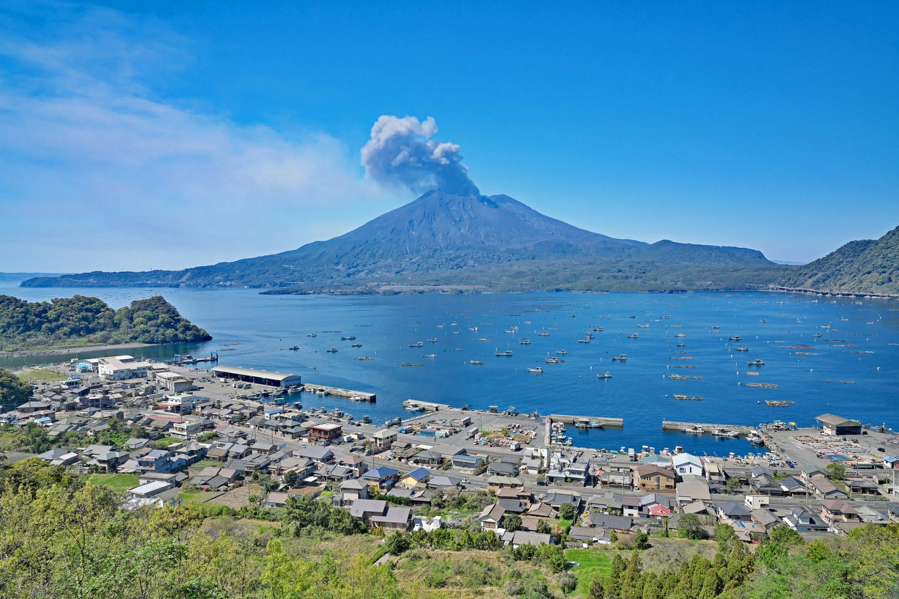

Kagoshima
Kagoshima est une ville japonaise et capitale de la préfecture éponyme, située dans la baie de Kinko au sud de l’île de Kyushu. Elle doit son surnom de "Naples de l’Orient" pour sa proximité avec le volcan actif Sakurajima et son doux climat ensoleillé. Ancienne cité féodale, son histoire est marquée par Takamori Saigo connu comme le "dernier samouraï", mort héroïquement sur la colline de Shiroyama en 1877.
Mis à part Naha à Okinawa, Kagoshima est sans doute la grande ville la plus au sud du Japon. Elle fait face à Sakurajima, une île volcanique dont la dernière grosse éruption, qui date de 1914, a façonné sa géographie. Son cratère actif (celui du sud) est en constante activité et crache de la fumée presque continuellement. L'île de Sakurajima bien sûr, mais aussi la ville de Kagoshima, doivent donc composer avec la poussière et les pluies volcaniques. Ce n’est généralement pas trop gênant mais on sent que le volcan tient une part importante sur la ville, et pas seulement à travers le tourisme.
Le centre-ville de Kagoshima s'avère relativement étendu : pas mal d’arcades shopping vous attendent, mais aussi des parcs et espaces verts, une balade historique ou un parc à dauphins 🐬. Le tram à l'ancienne est tout à fait charmant et surtout bien pratique car il relie les différents quartiers de la ville. Pour être tout à fait honnête, au-delà du centre-ville il n'y a pas grand-chose à voir dans les zones résidentielles ou administratives voire industrielles. Attention donc où vous logerez car on s'éloigne finalement assez vite des zones animées.